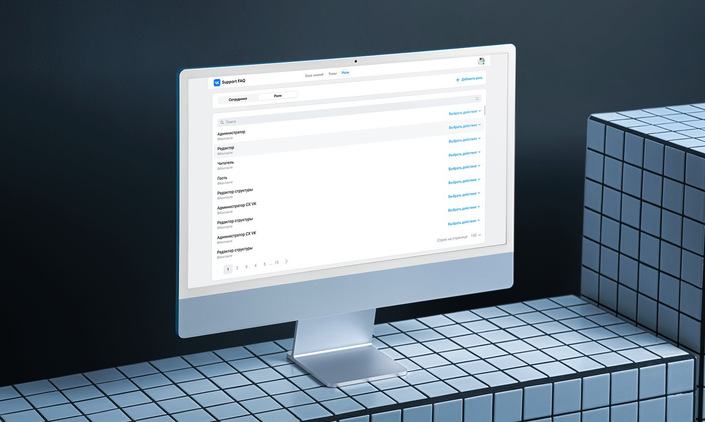

Система знаний
для ВКонтакте
В 2024–2025 году команда занималась разработкой системы хранения и управления знаниями для ВКонтакте. Статичную базу FAQ превратили в полноценную платформу поддержки пользователей.
Смотреть оригинальный кейс →Контекст проекта
Клиент — ВКонтакте, крупнейшая социальная сеть в России и СНГ. Нужно было превратить статичную базу знаний в универсальную платформу: базу знаний, точки входа в поддержку, систему оценки качества (CSAT) и умный поиск — под единой крышей и с гибкой настройкой под разные бизнес-юниты.
Систему спроектировали так, чтобы новые сценарии поддержки можно было запускать без участия разработки — через многоуровневую админку с ролевой моделью.
Статичный FAQ не справлялся с масштабом
База знаний была устроена как набор разрозненных статей — без гибкой архитектуры, ролей администрирования и способа измерить качество поддержки. При таком масштабе это ограничивало и пользователей, и бизнес-юниты, которым нужна была своя настройка контента.
Собрать универсальную платформу
Спроектировать масштабируемую архитектуру FAQ, реализовать многоуровневую админку с ролевой моделью, добавить инструменты обратной связи (CSAT, обращения в поддержку) и быстрый умный поиск — с учётом сценариев для авторизованных и неавторизованных пользователей и системой логирования для аналитики.
Как решали задачу
- 01
Архитектура FAQ
Спроектировали древовидную структуру хранения данных: раздел → рубрика → подрубрика → категория → статья, которая автоматически адаптируется от 2 до 5 уровней под разные продукты.
- 02
Админ-панель и роли
Собрали систему управления статьями с полноценным жизненным циклом — черновик, публикация, архив — с учётом различий веб, iOS и Android, и ролевую модель на 5 ролей с разными правами доступа.
- 03
Поиск и обратная связь
Реализовали умный поиск с учётом опечаток и нечётких совпадений, синонимов, оценку CSAT, а также конструкторы точек входа в поддержку и опросов.
- 04
UX и интеграция с VK ID
Продумали бесшовную навигацию через CJM, разместили умный поиск сразу для пользователей и в боковой панели для администраторов, собрали интерфейс на компонентах VK UI и настроили логирование для аналитики.
Как это выглядит

«Получилась единая платформа для базы знаний и поддержки внутри экосистемы ВКонтакте — команды публикуют и обновляют контент без участия разработки.»— Команда ВКонтакте
Что получилось в результате
Пользователи чаще решают вопросы самостоятельно, у команды появились инструменты аналитики поведения, а новые сценарии поддержки можно запускать без участия разработки — архитектура заранее спроектирована как масштабируемая.